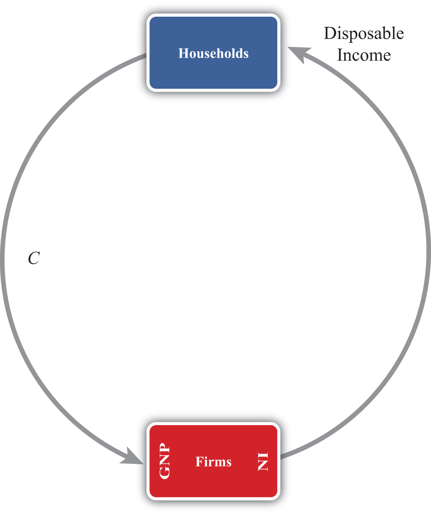
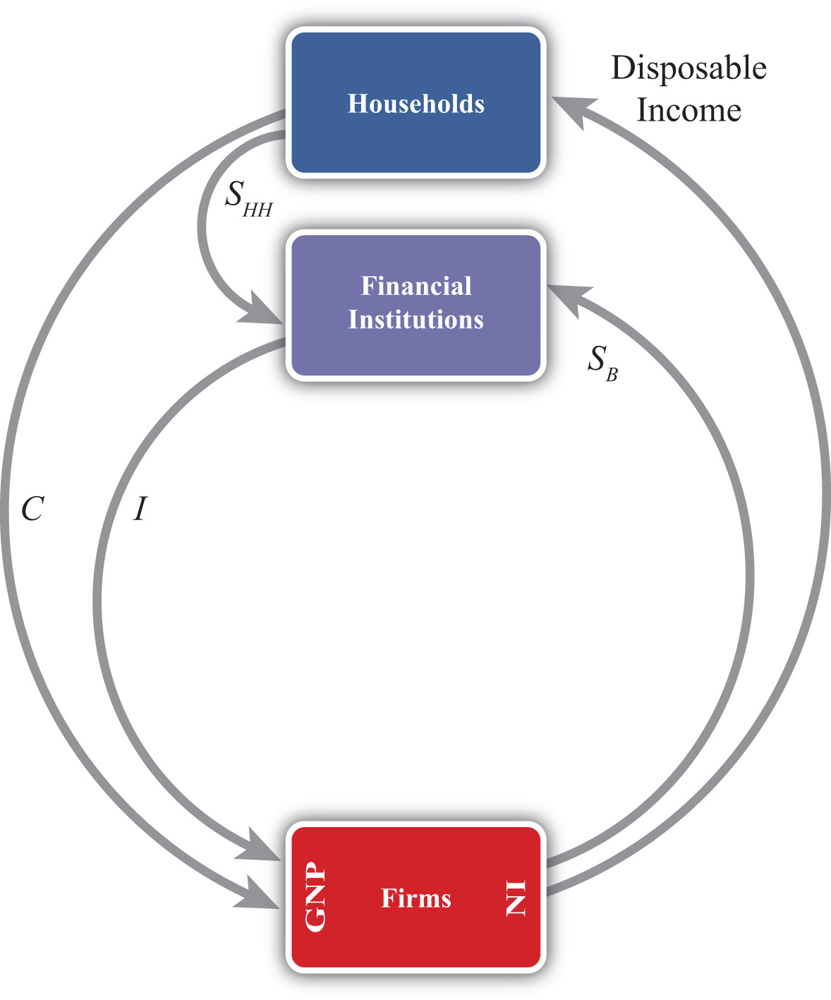
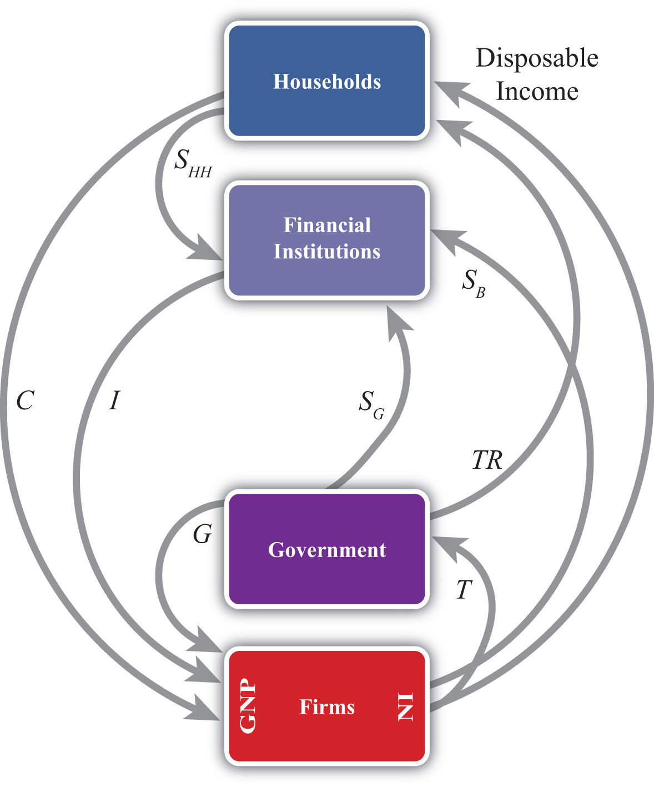
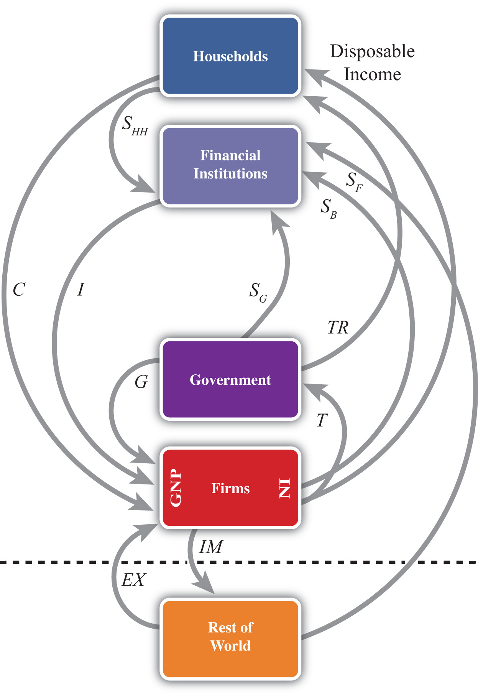

One of the important relationships among aggregate economic variables is the so-called twin-deficit identityShows the relationship between a country’s government budget deficit and a country’s current account deficit. It says that the sum of net private saving (Sp − I) and the current account deficit must equal the government budget deficit., a term in reference to a country’s government budget deficit and a simultaneous current account deficit. The name for this identity became commonplace during the 1980s and 1990s because at that time the United States experienced deficits in both of these accounts. Now, as we will see later, the identity will be a misnomer in many circumstances since there is no reason that “twin” deficits need to always appear together on these two national accounts. In fact, some countries will, at times, experience a deficit on one account and a surplus on the other. Also, at times, a country will experience a surplus on both accounts.
Thus a better title to this section would be “The Relationship between a Country’s Government Budget Deficit and Its Current Account Deficit.” However, since 2004, the United States finds itself back in the twin-deficit scenario, and since “twin-deficit identity” rolls off the tongue much more easily, we will stick to this title.
To understand this identity it will be helpful to take a much more careful look at the national income identity. This time I will build up the identity in a stepwise fashion using a circular flow diagram to better visualize the flows of money within an economy. A circular flow diagram is typically one of the first principles shown to students in an introductory macroeconomics class. Its purpose is to show the flow of money between the major players (or agents) within an economy. Circular flow diagrams can be either simple or complex depending on how many agents one introduces into the system and how finely one wishes to break down the monetary flows.
Figure 13.2 The Simplest Circular Flow
The simplest version of a circular flow diagram considers an economy consisting of two agents: households and firms. We imagine that firms produce goods and services using labor as an input.
The flow of money is shown in Figure 13.2 "The Simplest Circular Flow". The C arrow represents the dollar value of consumption expenditures made by households to purchase the goods and services produced and sold by firms. (The goods and services flow could be represented by an arrow in the opposite direction to C, but we leave that out for simplicity.) Since we assume in this case that there are only households buying goods, all GNP consists of C. The money that flows to firms from sales of consumption goods is given to the workers in exchange for their labor services. This monetary flow is represented by the arrow labeled “disposable income.” Disposable income is all the money households have to spend, which in this case is equal to the national income (NI).
Note especially that we use GNP rather than GDP as our measure of national income so that flows with the rest of the world later are properly defined.
Figure 13.3 The Circular Flow Adding Financial Institutions
The circular flow can be extended one step by adding financial institutions in Figure 13.3 "The Circular Flow Adding Financial Institutions". Financial institutions represent any company that facilitates borrowing and lending; the prime example is a bank. However, they may also include investment companies, pension funds, and mutual funds. The presence of financial institutions allows some money to be diverted from the consumption flow. In Figure 13.3 "The Circular Flow Adding Financial Institutions", these diversions are represented by SHH, representing household savings and SB, representing business saving. Some of the revenue earned by firms is not actually given out to workers in the form of wages. Instead some money is “retained” in the form of profit and excess earnings. These retained earnings are generally used to purchase investment goods to help an industry replace worn-out capital equipment and to add new capital. Much of these retained earnings may be used directly to purchase new capital equipment, although some of it will be saved by depositing it in a financial institution. For simplicity we will imagine that all such business saving flows through the financial system, hence the SB arrow. In addition, households generally hold back some of their income from spending and deposit it into pension plans, savings accounts, and so on. Thus we include the arrow from households. The easiest way to think of the diagram is to imagine that financial institutions take deposits from firms and households and then lend out the money to finance investment spending, I. With some exceptions, this is the way it will often work. One notable exception is that some of the money lent by banks is often used to finance consumption rather than investment. This occurs whenever households finance consumption spending using a credit card. However, we can avoid this complication by defining SHH as being “net” savings, where the net means “after subtracting household borrowing.” With this definition in mind, it should be clear that SHH can be negative—that is, its flow reversed—if household borrowing exceeds household saving.
We can now identify several important relationships. The first one relates to an important decision made by households. They choose how much of their disposable income should be spent on consumption and how much should be saved. You may recall from previous courses that the fraction of income spent on consumption goods (from an extra dollar of income) is called the marginal propensity to consumeThe additional amount of aggregate consumption that arises from an additional dollar of national income., while the fraction of income saved is called the marginal propensity to save.
A second relationship is shown on the left side of the Firms box. This indicates that GNP is equal to the sum of C and I. This version of the national income identity would only be valid if there were no government sector and no trade with the rest of the world.
A third important relationship is shown by noting the flow of money in and out of the financial sector. There we see two arrows flowing in (i.e., SHH and SB) and one flow outward (i.e., I). This leads to the identity
SHH + SB = I,indicating that the sum of household and business saving equals investment. A more common simplification of this relationship is shown by noting the following:
SP = SHH + SB,where SP is called private saving. Thus private saving equals the sum of household saving and business saving. This will simplify the above identity to
SP = I,or simply, private saving equals investment. Note that the term “private” is used here to distinguish it from government (or public sector) saving, which we’ll include next.
Figure 13.4 The Circular Flow Adding Government
Next, let’s add in the government sector in Figure 13.4 "The Circular Flow Adding Government". The government is shown both to take money out of the circular flow and to inject money back in. Money is withdrawn first in the form of taxes (T). In the adjoining diagram, taxes are represented as a flow of money directly from firms, as if it is entirely a tax on income. This is a simplification since in reality taxes are collected in many forms from many different agents. For example, governments collect profit taxes from firms and financial institutions, sales and property taxes from households, and tariffs on traded goods (not included yet). All of these taxes are assumed to be lumped together in the T flow and withdrawn directly from national income.
Tax revenues (TR) can be spent in two separate ways. The TR flow represents transfer payments injected into the household income stream. Transfer payments include social security paid to retired workers, Medicaid and welfare payments, unemployment, and so on. These are government expenditures that do not exchange for a particular good or service. The second type of expenditure is G. G represents spending by government for the purchase of goods and services produced by firms. It includes defense spending, education, police and fire protection, and so on.
The final monetary flow, shown flowing out of the government, is labeled SG and refers to government saving. It should be obvious that the money collected by government in the form of taxes need not always equal government expenditures. In the event that tax revenues exceed expenditures, the government would have extra money left over. We imagine that this money would be saved in the financial sector since it is always better to collect interest when possible. Hence we draw the flow of excess funds, government saving (SG), flowing from government into the financial sector.
We can now represent the flow of funds in and out of the government sector with the following identity:
SG = T − TR − G.When T exceeds the sum of TR and G, the government has extra saving that flows into the financial sector. These funds would then be available to lend out and finance additional investment.
Of course, what is more typical of many governments is for the sum of TR and G to exceed tax revenue, T. In this case, the flow of government saving (SG) would be negative and would be represented in the diagram as a flow in the opposite direction. In this case, the government would be borrowing money from the financial sector to finance its excess expenditures. We would also say that the government is running a budget deficit.
In short, negative government saving, that is, SG < 0, implies a government budget deficit, which the government finances by borrowing from the financial sector.
Otherwise, positive government saving, that is, SG > 0, implies a government budget surplus, which results either in additions to saving or a repayment of previous debt.
Next, in this version of the circular flow, we can represent the national income identity as the flow of money into firms. In this case, GNP equals the sum of C, I, and G. This version would only be Accurate when there is no trade with the rest of the world.
Lastly, with government included, we must rewrite the relationship representing the flows in and out of the financial sector. This now becomes
SHH + SB + SG = I.This identity says that the sum of household, business, and government saving must equal private investment expenditures.
Figure 13.5 The Circular Flow Adding the RoW
The final circular flow diagram shown in Figure 13.5 "The Circular Flow Adding the RoW" extends the previous version to include trade flows with the rest of the world. The rest of the world (RoW) is shown at the very bottom of the adjoining diagram, below the dotted line, which represents the border. Trade with the RoW consists first of exports of goods, services, income and transfers, and expenditures on exports (EX), represented by a flow into firms since money is being used by foreigners to purchase the exported products. Second, imports of goods, services, income and transfers, and imports (IM) are subtracted from firms, resulting in an arrow from firms to the RoW. This adjustment accounts for the fact that measured expenditures made by households, the government, and firms in a open economy will consist of purchases of both domestic and imported goods. Thus the C, I, and G flows will include their purchases of imports, and these should not be included as part of GNP. In essence, the money used to buy imported products is redirected to the foreign firms, hence we have the outflow of money. (For a more complete explanation see Chapter 13 "National Income and the Balance of Payments Accounts", Section 13.1 "National Income and Product Accounts".)
This completes the national income identity with all major sectors included and now becomes
GNP = C + I + G + EX − IM,which is represented by the flow of money into (and away from) firms on the left side of the diagram. However, as noted elsewhere, EX − IM, the balance on the current account, need not be equal to zero. If EX − IM > 0, then the country would have a current account (CA) surplus, whereas if EX − IM < 0 the country would have a CA deficit.
Consider when EX − IM < 0. In this case, more money flows out to purchase imports than flows back in to purchase exports. Essentially, there is a loss of money to the RoW despite some exceptions; however, this money does not remain outside the country. Instead, it is brought right back in and deposited into financial institutions (shown as the SF flow on the diagram). In other words, it is saved. This saving represents the country’s financial account surplus, which is equal and opposite to the CA deficit (see Chapter 13 "National Income and the Balance of Payments Accounts", Section 13.5 "Recording Transactions on the Balance of Payments" for a more complete explanation).
The key point is that foreign saving offsets the CA deficit. This can be represented by the relationship showing the inflows and outflows from the RoW, namely,
SF = IM − EX.This says that foreign saving equals the CA deficit. From the perspective of the foreigners, we would refer to SF as money saved or lent to the domestic country. From the perspective of the domestic country, SF would be considered money borrowed from the RoW.
Clearly, since a country may run a surplus on trade (i.e., EX − IM > 0), SF could also be negative. In this case, the RoW would either be dissaving, meaning it is withdrawing previously accumulated saving from the domestic country, or the RoW would be borrowing money from the domestic country. This would occur if a domestic bank makes a loan to someone abroad. Alternatively, from the perspective of the domestic country, we can say it is lending money to the RoW when SF < 0.
The twin-deficit identity is derived by accounting for the monetary flows in and out of the financial sector in version four of the circular flow. This results in the following identity:
SHH + SB + SG + SF = I.This says that the sum of household saving, business saving, government saving, and foreign saving must equal private investment spending. An equivalent version can be written by recalling that household plus business saving equals private saving to get
SP + SG + SF = I.The identity is best interpreted by noting that there are four key sources for funds in the financial sector that are not part of the consumption stream. The pool of funds to finance investment can be drawn from households, businesses, the government, or from the RoW. Also, the sum of all funds not used for consumption must be equal to the amount spent on investment goods.
It is important to note that this relationship is an accounting identity. This means that the relationship must be true as long as all variables are measured properly. This is not an economic theory, which is a proposition that may or may not be true. In practice, this identity rarely adds up, however, because the variables are not typically measured accurately.
To turn this identity into the “twin-deficit” identity, we must merely take note of several previous definitions. Recall that
SG = T − TR − G, SF = IM − EX,and
SP = SHH + SB.Plugging these into identity 1 above yields
SP + T − TR − G + IM − EX = I.Reorder these to get the following twin-deficit identity:
(SP − I) + (IM − EX) = (G + TR − T).This is a popular way of writing the twin-deficit identity since it explicitly indicates two deficits. If the second expression (IM − EX) > 0, then the country has a current account deficit (i.e., a trade deficit). If the right-hand-side expression (G + TR − T) > 0, then the country has a government budget deficit. The expression in total, then, demonstrates that these two deficits are related to each other according to this accounting identity. Indeed, the difference between the government budget deficit and the trade deficit must equal the difference between private saving and investment as shown here:
(SP − I) = (G + TR − T) − (IM − EX).Perhaps the best way to get a feel for the twin-deficit relationship in a country is to look at the numbers. Table 13.7 "U.S. Twin-Deficit Figures (GDP), 1997–2008" and Table 13.8 "China Twin-Deficit Figures (GDP), 1997–2007" show values for the twin-deficit identity in the United States and in China over the past ten years or so. All values are presented as a percentage of GDP. Also, because the data on the balance of payments never add up, which results in a statistical discrepancy term, the twin-deficit identity numbers do not add up. To avoid that problem, the private saving numbers presented are not the actual reported values but the values saving would have to be to assure the twin-deficit identity adds up—that is, it is derived as a residual value.
Table 13.7 U.S. Twin-Deficit Figures (GDP), 1997–2008
| (Sp − I) + Current Account Deficit = Govt. Budget Deficit | ||||
|---|---|---|---|---|
| Year | Private Saving* (%) | Investment (%) | Current Account Deficit (%) | Govt. Budget Deficit (%) |
| 2008 | 13.5 | 14.0 | 4.7 | 4.2 |
| 2007 | 11.7 | 15.4 | 5.3 | 1.6 |
| 2006 | 12.1 | 16.7 | 6.1 | 1.5 |
| 2005 | 12.9 | 16.5 | 6.1 | 2.5 |
| 2004 | 14.0 | 16.1 | 5.5 | 3.4 |
| 2003 | 14.0 | 15.2 | 4.8 | 3.6 |
| 2002 | 13.4 | 15.1 | 4.4 | 2.7 |
| 2001 | 11.6 | 15.9 | 3.8 | −0.5 |
| 2000 | 11.0 | 17.7 | 4.2 | −2.4 |
| 1999 | 12.6 | 17.5 | 3.2 | −1.7 |
| 1998 | 13.8 | 17.3 | 2.4 | −1.0 |
| 1997 | 15.2 | 16.7 | 1.7 | 0.2 |
| * Private saving is calculated as a residual. | ||||
Source: U.S. Bureau of Economic Analysis, National Economic Accounts, Frequently Requested NIPA Tables. See U.S. BEA interactive tables for the years indicated at http://www.bea.gov/national/nipaweb/SelectTable.asp?Popular=Y.
Table 13.8 China Twin-Deficit Figures (GDP), 1997–2007
| (Sp − I) + Current Account Deficit = Govt. Budget Deficit | ||||
|---|---|---|---|---|
| Year | Private Saving* (%) | Investment (%) | Current Account Deficit (%) | Govt. Budget Deficit (%) |
| 2007 | 53.0 | 42.3 | −11.3 | −0.6 |
| 2006 | 52.8 | 42.6 | −9.4 | 0.8 |
| 2005 | 51.1 | 42.7 | −7.2 | 1.2 |
| 2004 | 48.1 | 43.2 | −3.6 | 1.3 |
| 2003 | 46.0 | 41.0 | −2.8 | 2.2 |
| 2002 | 43.0 | 37.9 | −2.4 | 2.6 |
| 2001 | 40.1 | 36.5 | −1.3 | 2.3 |
| 2000 | 39.5 | 35.3 | −1.7 | 2.5 |
| 1999 | 39.6 | 36.2 | −1.4 | 1.9 |
| 1998 | 40.2 | 36.2 | −2.9 | 1.1 |
| 1997 | 40.6 | 36.7 | −3.1 | 0.7 |
| * Private saving is calculated as a residual. | ||||
Source: China Data Online, China Statistical Yearbook. See China Statistical Yearbooks located at http://chinadataonline.org/member/yearbooksp/default.asp?StartYear=1981&EndYear=2009&IFFirst=yes&page=2.
The twin-deficit numbers reveal some interesting patterns. As of the most recent data (2008), the United States has twin deficits, with a CA deficit of 4.7 percent of GDP and a government budget deficit of 4.2 percent. Since these numbers are almost equal, it is as if the U.S. government deficit, which must be financed with borrowing, is being financed by borrowed funds from abroad. In the previous year, 2007, government borrowing requirements were much lower, at 1.6 percent, but borrowing from foreigners was higher at 5.3 percent. The extra borrowing allowed the U.S. savings rate to remain much lower than the private investment requirement. We can interpret this year as one in which private investment was mostly financed with borrowings from abroad.
The United States has had twin deficits since 2001, when it finished a four-year run with a trade deficit and a government budget surplus. This demonstrates that twin “deficits” do not always arise despite the label used to describe the identity. During the budget surplus years the government was able to retire some of its outstanding debt, but the country also ran CA deficits implying, essentially, borrowings from foreigners. As in 2007, these years also describe periods in which foreign borrowings are used to maintain a higher investment level than can be sustained with the lower national savings rate.
In contrast, consider the twin-deficit numbers calculated in the same way for China during the same period. The differences with the U.S. numbers are striking. The two things that stand out immediately are the significantly higher values for private saving and investment. Instead of numbers in the midteens in the United States, China’s percentages are in the midforties to low fifties. Again, the savings terms are calculated as residuals, so there may be some error there, but nonetheless it is clear that China both saves and invests about three times more than the United States as a percentage of GDP. Because it invests so much more, the implication from the national income identity is that China consumes much less than the United States as a percentage. Indeed, China’s consumption figures (not shown) are usually less than 50 percent of GDP.
Indeed, this is why China and many other Asian economies are described as high-saving and low-consuming countries. The United States in comparison is described as a high-consumption country and low-saving country.
The negative number on China’s CA deficit in all the years means that China has run a trade surplus. A surplus means it is lending money abroad and forgoing consumption, by another 11 percent in 2007. (This will be explained in more detail in Chapter 14 "The Whole Truth about Trade Imbalances".) Also, the negative number for China’s budget balance means that it was running a government budget surplus in 2007. So in 2007, China had twin surpluses—a much rarer occurrence—rather than twin deficits. In previous years China didn’t have twin anything: running trade surpluses that were increasing through the past decade, and government budget deficits.
It is worth reflecting briefly on the large investment and trade surpluses in China in comparison with the United States. The U.S. per capita GDP is about $47,000. Comprising that per person production is about 15 percent that goes into investment. That still leaves a considerable percentage left for the consumption and government spending that enhance Americans’ standard of living. In contrast, China’s per capita GDP, in purchasing power parity (PPP) terms, is about $6,000. Per person, it produces much less than in the United States. But curiously, despite being a much poorer country, the high investment rate means that it consumes and spends on government programs a much smaller percentage of its income than the United States; perhaps as little as $3,000 per person.
This seems to fly in the face of simple logic. One might expect that a richer country like the United States would save more and consume less since it can do so while still maintaining a high standard of living. For a poorer country like China, we might expect it would save less and try to consume a larger proportion of its income in order to catch up (i.e., in terms of its standard of living) with the rest of the world. Instead, it is the exact opposite.
Jeopardy Questions. As in the popular television game show, you are given an answer to a question and you must respond with the question. For example, if the answer is “a tax on imports,” then the correct question is “What is a tariff?”
Below are the economic data for the fictional country of Sandia. Write out the twin-deficit identity. Verify whether Sandia’s data satisfy the identity.
Table 13.9 Sandia’s Economic Data (Billions of Dollars)
| Gross Domestic Product | 400 |
| Imports of Goods and Services | 140 |
| Investment Spending | 20 |
| Private Saving | 30 |
| Exports of Goods and Services | 100 |
| Government Transfers | 40 |
| Government Tax Revenues | 140 |
| Government Spending | 140 |
| Consumption Spending | 280 |
Japan once argued that the main reason the United States had large trade deficits during the 1980s and 1990s was because of its large federal government budget deficit. If the United States wanted to reduce its trade deficit, Japan said, then the United States should reduce its budget deficit. Use the twin-deficit identity to answer the following questions:
Explain whether the following economic changes are consistent with the twin-deficit identity. Assume ceteris paribus, meaning all other variables in the identity remain fixed.
Refer to the table below to answer the following questions:
Use the twin-deficit identity to fill in the blank values in the table below for the three fictitious countries.
| Private Saving (Sp) | Investment | Current Account Deficit | Government Budget Deficit | |
|---|---|---|---|---|
| Metis | 500 | 500 | 200 | |
| Thebe | 150 | 0 | 300 | |
| Leda | 75 | 100 | 0 |